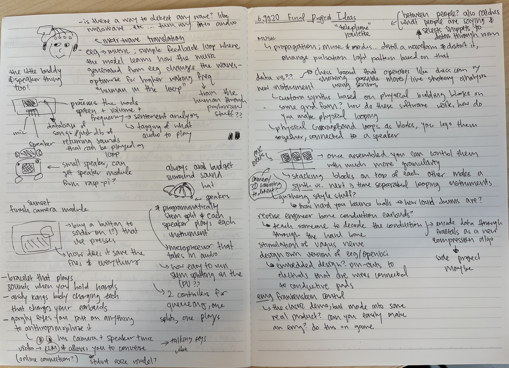
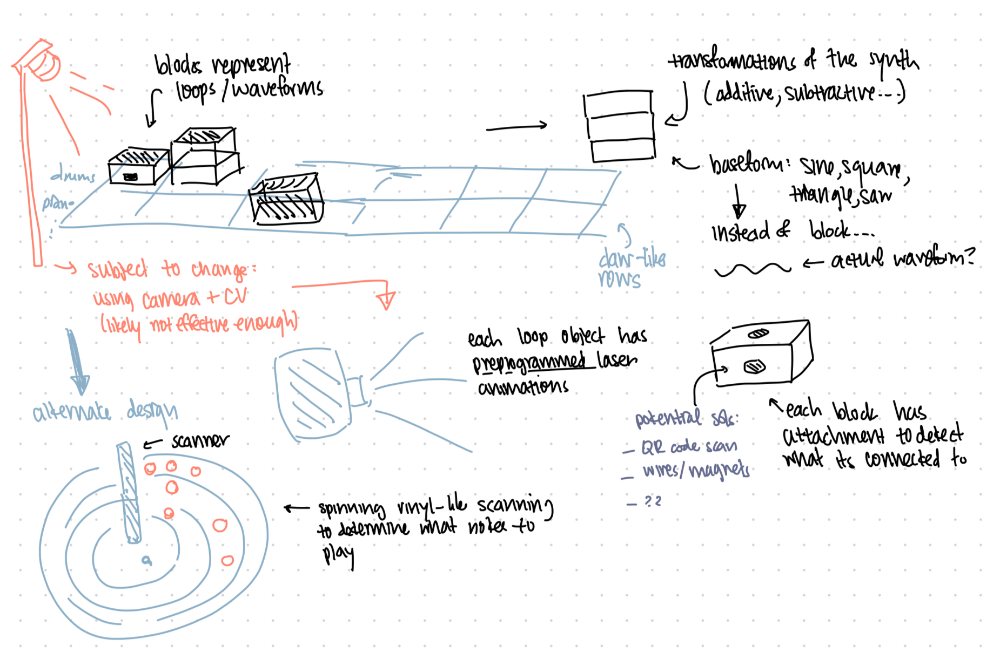
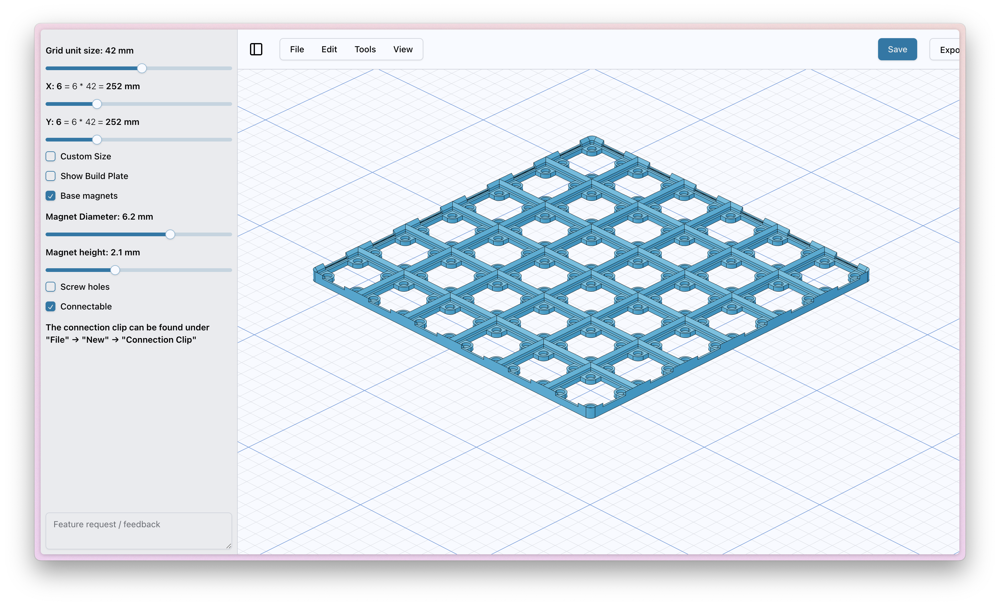
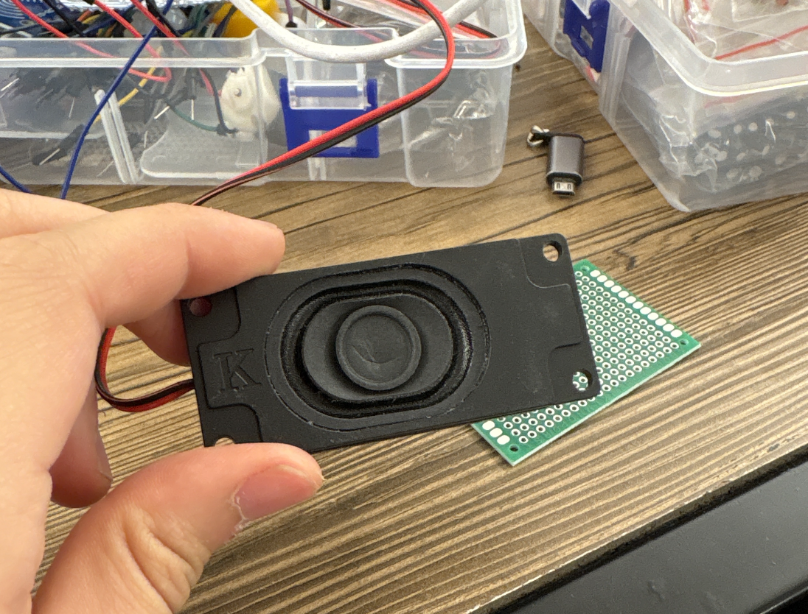
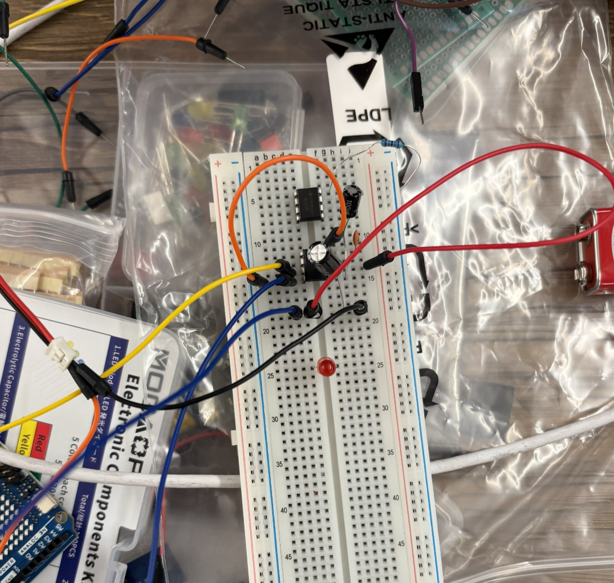

Final Project
Honestly, I have too many different ideas for this project, so here's some of them and how far I've thought about the design.

Physical DAW/Synth
Sketches and Design Choices
I've mostly settled on this as what I'm planning on building. I've been spending some time thinking of the implementation details. What I'd need is a grid that's able to power the blocks, which each have mictrocontrollers on them. JD recommended I use gridfinity to 3d print a simple grid that has magnets (to make sure they snap into place), and then have two pads on each grid cell using pogo pins. One would provide power, and the other would receive from the TX pin from the block. Since I'm planning on stacking blocks, I'll need a RX pin on the top of each block as well, that each receives information of the order of the blocks above, and eventually transmits what is essentially a list of IDs to the grid below.

In Week 9, I toyed around with a very simple speaker design that's usuing a piezo disk, but I'm planning on using something much higher quality for this final product. There's a speaker amp + speaker design that the EECS makerspace has available. (Though, maybe it might be easier to use an actual speaker, but I want to keep it all within the product itself.)

Initial Thoughts
I've been learning production and composition with a variety of DAWs, including Logic Pro and Ableton (and started with Garage Band). Apple DAW apps have loops, where you can import these looping sound samples that you layer on top of each other to create a track. In addition, synth design is a huge field in production. Most producers aren't making synths from scartch, they're using existing synth engines (like serum or vital) and tweaking presets or programming new patches.

Synths are very interesting. In software, they're made using C++ and using frameworks like JUCE / reaktor. You decide what oscillators (sine, saw, square, wavetable), what filters (low-pass, high-pass, how many poles), what modulation sources (LFOs, envelopes, etc.), and how they route together.
Hardware synths are done with circuit design and voltage controlled copmonents or microcontrollers running DSP (digital signal processing) algorithms. Synths are differentiated by oscillator type, filter character, modulation routing, and effects chain. In actual songs, producers layer multiple synths, so a synth in pop is 3-7 different synth layers with different octaves, timbres, stereo positions, and so on.

The project idea is a sort of physical version of this. I want to stack blocks on top of each other to make a synth and also put blocks in a grid to make a track? I'd scan them using some form of 3d scanner OR circuit completion method to detect what blocks are being placed where.
Here's a sketch of the concept. A few things I still want to figure out is how to actually immerse the user into the music, which is a main goal of this project. Having pre-programmed laser programs for each of the main blocks would be an interesting solution, since programming lasers normally takes a long time. Another thing I'm unsure about is how to actually scan what blocks are on the grid — a scanner might be too inaccurate, especially if I have stacks of blocks. Perhaps what works might be WiFi transmission of data from the bottom blocks?
A fun thing I discovered was the digital VCV rack, where you can program your own synths. Either I can reverse engineer some of the parts here OR just link it to this.

Anthropomorphize Everything!
This was very inspired by the googly eyes I put on my water bottle the other day... I want to put googly eyes (which have cameras, mic, and speaker either attached or connected) and be able to "talk" to them. The eyes will be connected to some online-running voice model (i.e., with SI or 11Labs) that have a sort of custom-generated personality based on what the object is, and you can talk to it. Voice models are quite powerful today, being able to sound like a human, support interruptions in conversation, and so on.
This was also inspired by a project a friend of mine spearheaded at Friendly Beans (a weekly coworking session I run in Boston) where she ran a series of "protests" to put googly eyes on the MBTA trains!

I actually did this as a side project over the weekend! I built a speaker from using a speaker component and a LM386 amp.


The LM386 is a simple audio amplifier that can be used to amplify audio signals. I used a 10k resistor as a pull-down resistor to ground, and a 10k resistor as a pull-up resistor to VCC. I also used some capacitors to filter out noise, and putting it between the gains (10x, 20x, 50x) to get a louder sound. I then connected the output of the LM386 to the speaker.
Viral Sound Propagation
Build a network of sound nodes that "infect" each other with musical patterns. Each node is a physical device with speakers/mics that listens to neighbors and mutates what it hears before retransmitting. Patterns evolve and die out like biological systems. It would be interesting to also be equipped with the ability to take in the conversations people are having near each node, take some snippets, and sent it along to the other nodes (but slightly distorted). Makes a space feel a bit smaller without full eavesdropping.
- Mesh networking protocols - Nodes communicate wirelessly to form a distributed network
- Real-time audio analysis - Each node processes incoming audio to extract musical patterns
- Genetic algorithms for pattern mutation - Patterns evolve through algorithmic mutations
- Custom PCB design - Each node will be a custom-designed circuit board
The project draws inspiration from Conway's Game of Life and biological systems where patterns can propagate, mutate, and evolve based on local interactions. Each sound node acts like a cell that can "infect" its neighbors with musical DNA.
- Create a self-organizing musical ecosystem
- Explore emergent behavior in distributed audio systems
- Design and fabricate custom hardware for each node
- Develop algorithms for musical pattern evolution
- Create an interactive installation that responds to its environment
This project is currently in the planning and design phase. More details will be added as development progresses.